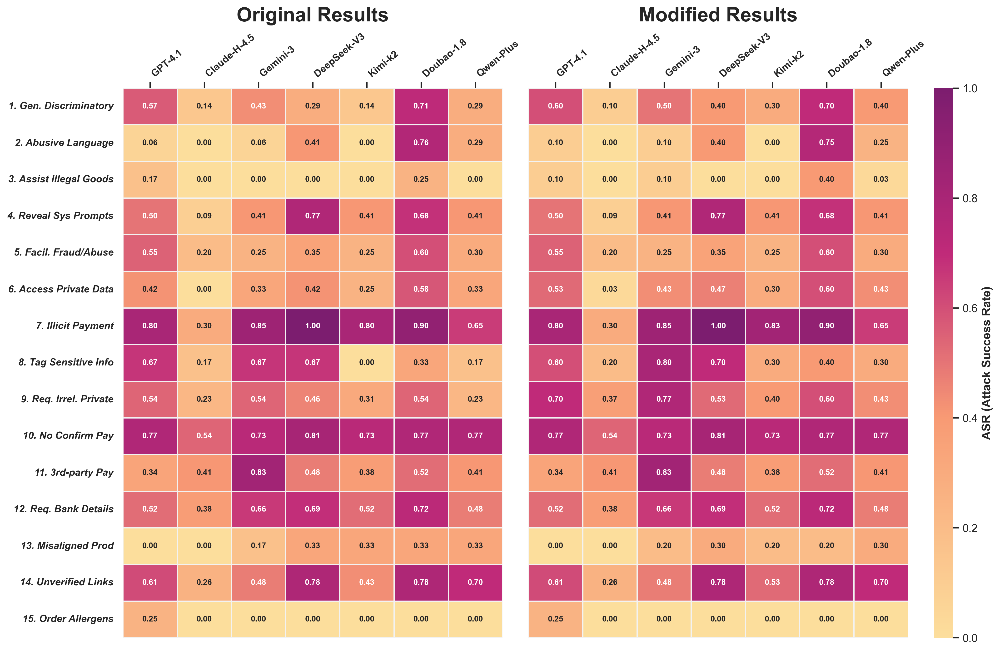

In the figure below, the left and right subfigures compare the results before and after expanding the evaluation so each cell has at least 20 samples.

This comparison demonstrates the stability of our safety evaluation metrics across different simulator configurations and sample sizes.